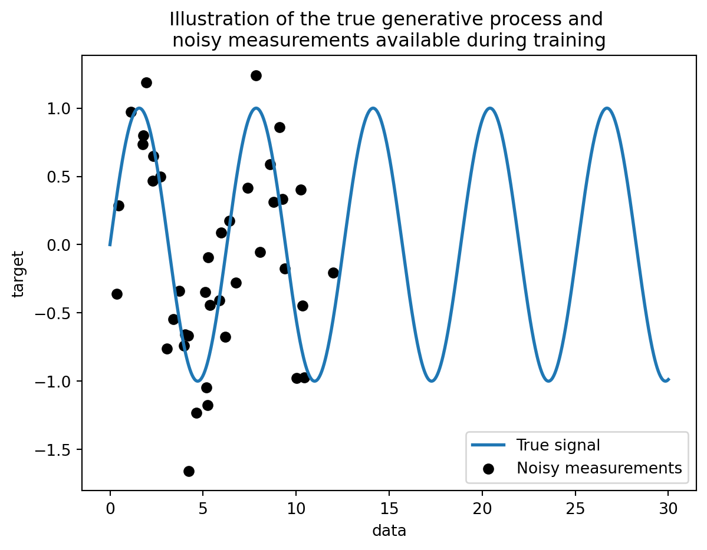
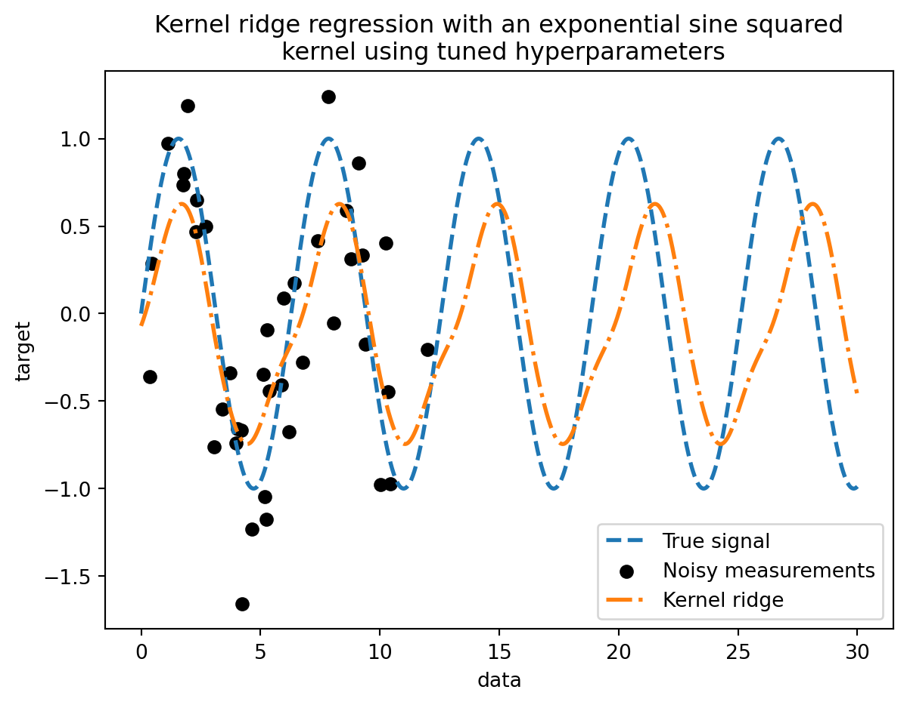
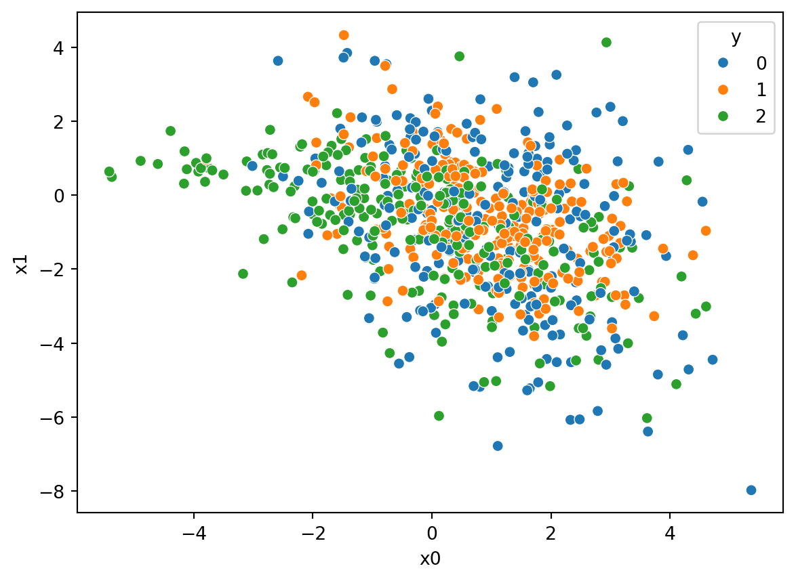
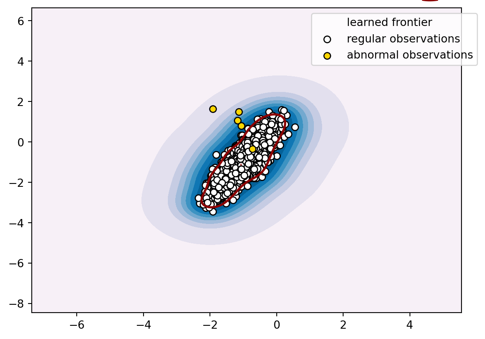
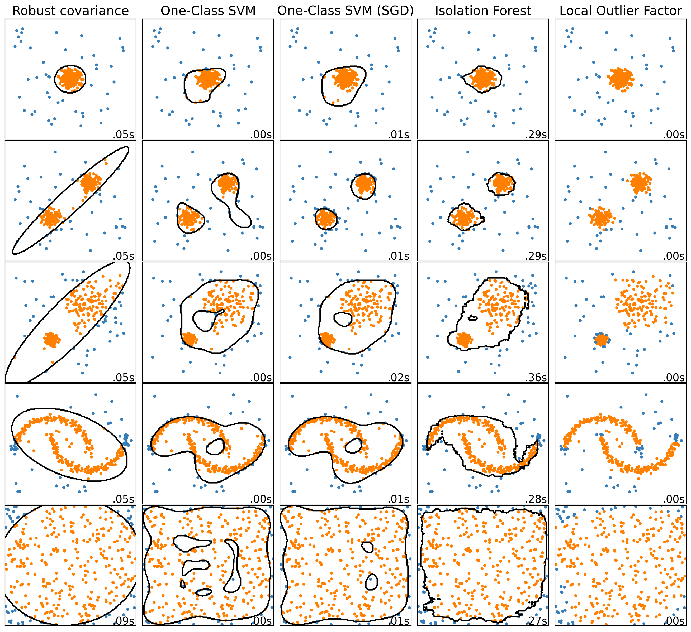

import numpy as np
rng = np.random.RandomState(0)
data = np.linspace(0, 30, num=1_000).reshape(-1, 1)
target = np.sin(data).ravel()7 Problemas y soluciones
7.1 Regresión de Kernel
La regresión de Kernel es utilizada para los casos, que la entrada es un vector de características D-dimensional, con D > 3. La regresión del kernel es un método no paramétrico. Eso significa que no hay parámetros que aprender. El modelo se basa en los datos mismos (como en kNN). En su forma más simple, en la regresión del kernel buscamos un modelo como este:
\[ f(x) = \dfrac{1}{N}\sum_{i=1}^{N}w_{i}y_{i} \]
, donde \[ w_{i} = \dfrac{Nk(\dfrac{x_{i}-x}{b}))}{\sum_{i=1}^{N}k(\dfrac{x_{k}-x}{b})} \]
La función k(·) es un núcleo(kernel). Puede tener diferentes formas, la más utilizada es el núcleo gaussiano:
\[ k(z)= \dfrac{1}{\sqrt{2\pi}}exp(\dfrac{-z^2}{2}). \]
El valor b es un hiperparámetro que ajustamos usando el conjunto de validación.
Ejemplo 7.1
training_sample_indices = rng.choice(np.arange(0, 400), size=40, replace=False)
training_data = data[training_sample_indices]
training_noisy_target = target[training_sample_indices] + 0.5 * rng.randn(
len(training_sample_indices)
)import matplotlib.pyplot as plt
plt.plot(data, target, label="True signal", linewidth=2)
plt.scatter(
training_data,
training_noisy_target,
color="black",
label="Noisy measurements",
)
plt.legend()
plt.xlabel("data")
plt.ylabel("target")
_ = plt.title(
"Illustration of the true generative process and \n"
"noisy measurements available during training"
)
from sklearn.linear_model import Ridge
ridge = Ridge().fit(training_data, training_noisy_target)
plt.plot(data, target, label="True signal", linewidth=2)
plt.scatter(
training_data,
training_noisy_target,
color="black",
label="Noisy measurements",
)
plt.plot(data, ridge.predict(data), label="Lineal regression")
plt.legend()
plt.xlabel("data")
plt.ylabel("target")
_ = plt.title("Limitation of a linear model such as ridge")
import time
from sklearn.gaussian_process.kernels import ExpSineSquared
from sklearn.kernel_ridge import KernelRidge
kernel_ridge = KernelRidge(kernel=ExpSineSquared())
start_time = time.time()
kernel_ridge.fit(training_data, training_noisy_target)
print(
f"Fitting KernelRidge with default kernel: {time.time() - start_time:.3f} seconds"
)
plt.plot(data, target, label="True signal", linewidth=2, linestyle="dashed")
plt.scatter(
training_data,
training_noisy_target,
color="black",
label="Noisy measurements",
)
plt.plot(
data,
kernel_ridge.predict(data),
label="Kernel ridge",
linewidth=2,
linestyle="dashdot",
)
plt.legend(loc="lower right")
plt.xlabel("data")
plt.ylabel("target")
_ = plt.title(
"Kernel ridge regression with an exponential sine squared\n "
"kernel using default hyperparameters"
)Fitting KernelRidge with default kernel: 0.002 seconds
Este modelo ajustado no es exacto. De hecho, no configuramos los parámetros del kernel y en su lugar utilizamos los predeterminados. Podemos inspeccionarlos.
kernel_ridge.kernelExpSineSquared(length_scale=1, periodicity=1)from scipy.stats import loguniform
from sklearn.model_selection import RandomizedSearchCV
param_distributions = {
"alpha": loguniform(1e0, 1e3),
"kernel__length_scale": loguniform(1e-2, 1e2),
"kernel__periodicity": loguniform(1e0, 1e1),
}
kernel_ridge_tuned = RandomizedSearchCV(
kernel_ridge,
param_distributions=param_distributions,
n_iter=500,
random_state=0,
)
start_time = time.time()
kernel_ridge_tuned.fit(training_data, training_noisy_target)
print(f"Time for KernelRidge fitting: {time.time() - start_time:.3f} seconds")Time for KernelRidge fitting: 5.883 secondsAjustar el modelo ahora es más costoso desde el punto de vista computacional ya que tenemos que probar varias combinaciones de hiperparámetros. Podemos echar un vistazo a los hiperparámetros encontrados para hacer algunas intuiciones.
kernel_ridge_tuned.best_params_{'alpha': 1.991584977345022,
'kernel__length_scale': 0.7986499491396734,
'kernel__periodicity': 6.6072758064261095}start_time = time.time()
predictions_kr = kernel_ridge_tuned.predict(data)
print(f"Time for KernelRidge predict: {time.time() - start_time:.3f} seconds")
plt.plot(data, target, label="True signal", linewidth=2, linestyle="dashed")
plt.scatter(
training_data,
training_noisy_target,
color="black",
label="Noisy measurements",
)
plt.plot(
data,
predictions_kr,
label="Kernel ridge",
linewidth=2,
linestyle="dashdot",
)
plt.legend(loc="lower right")
plt.xlabel("data")
plt.ylabel("target")
_ = plt.title(
"Kernel ridge regression with an exponential sine squared\n "
"kernel using tuned hyperparameters"
)Time for KernelRidge predict: 0.006 seconds
7.2 Clasificación multiclase
La clasificación multiclase se refiere a aquellos casos en los que los datos contienen etiquetas que pertenecen a una de las \(C\) clases:
\[ y \in \{1,...,C\} \]
Por ejemplo, se puede clasificar utilizando features extraídos de un set de imágenes de frutas. En este ejemplo las etiquetas y serían:
y = ["manzana", "pera", "naranja"]Cada imagen es una muestra y puede ser clasificada como una de las tres posibles clases. La clasificación multiclase asume que cada muestra está asociada a una y solo una de las etiquetas.
En el ejemplo, una fotografía no podría ser una pera y una naranja al mismo tiempo. Si esto no se cumple estaríamos ante un ejemplo de clasificación multietiqueta, que se verá más adelante.
Existen algunos algoritmos de clasificación que se pueden extender para ser algoritmos de clasificación multiclase:
- ID3 y otros algoritmos de árboles de decisión
- Regresión logística reemplazando la función sigmoidal con la función softmax
- kNN
Hay otros algoritmos que no se pueden extender a clasificación multiclase de forma simple, o en algunos casos, son mucho más eficientes en el caso de clasificación binaria. Ante esta situación, una estrategia común es llamada uno versus el resto (OVR).
7.2.1 Uno versus el resto (OVR)
La idea detrás del enfoque de OVR es separar el problema de clasificación multiclase en múltiples casos de separación binaria.
En la siguiente figura podemos observar una ilustración con dos tipos de problemas de clasificación: binaria y multiclase.

Para la imagen de la derecha, un ejemplo de clasificación multiclase, podemos utilizar la estrategia de OVR, tal y como se muestra en la siguiente figura.

7.2.2 Implementación en python
Imports:
import pandas as pd
import seaborn as sns
import numpy as np
from sklearn.multiclass import OneVsRestClassifier
from sklearn.svm import SVC
from sklearn.model_selection import train_test_split
from sklearn.datasets import make_classification
import timeCreando datos aleatorios para clasificación:
# Generando un array aleatorio de 1000 muestras, 10 features y una etiqueta de y=[0,1,2]
X, y = make_classification(n_samples=1000, n_features=10, n_informative=5, n_redundant=5, n_classes=3, random_state=1)
# Separando el array en conjuntos de prueba (25 %) y entrenamiento (75 %)
X_train, X_test, y_train, y_test = train_test_split(X, y, test_size=0.25, random_state=0)
# Colocando en dataframes para facilidad de presentación y graficación
df_train = pd.DataFrame({"y":y_train, "x0":X_train[:,0], "x1":X_train[:,1], "x2":X_train[:,2], "x3":X_train[:,3], "x4":X_train[:,4], "x5":X_train[:,5], "x6":X_train[:,6], "x7":X_train[:,7], "x8":X_train[:,8], "x9":X_train[:,9]})
df_test = pd.DataFrame({"y":y_test, "x0":X_test[:,0], "x1":X_test[:,1], "x2":X_test[:,2], "x3":X_test[:,3], "x4":X_test[:,4], "x5":X_test[:,5], "x6":X_test[:,6], "x7":X_test[:,7], "x8":X_test[:,8], "x9":X_test[:,9]})
df_train| y | x0 | x1 | x2 | x3 | x4 | x5 | x6 | x7 | x8 | x9 | |
|---|---|---|---|---|---|---|---|---|---|---|---|
| 0 | 2 | -0.730468 | 0.397713 | 2.074811 | 3.268605 | 2.406136 | -1.596750 | -1.097254 | 0.839374 | 0.296566 | -0.135522 |
| 1 | 2 | 3.365775 | -1.418898 | 1.872383 | -0.693364 | -3.133404 | -2.877166 | 0.404063 | -1.955554 | -1.324028 | 1.988373 |
| 2 | 2 | -3.921299 | 0.641428 | -2.026409 | -2.679728 | 2.478175 | 4.280245 | 0.959757 | -1.031408 | 2.619929 | -1.552321 |
| 3 | 2 | -0.476039 | -0.361355 | 0.966933 | 2.514187 | 3.982157 | -1.931150 | -0.354184 | 2.025803 | -0.295005 | -2.314401 |
| 4 | 0 | -0.119220 | -0.421085 | 0.706323 | 0.561597 | -0.483120 | 0.058308 | -0.852335 | -0.952946 | -0.161098 | 0.587163 |
| ... | ... | ... | ... | ... | ... | ... | ... | ... | ... | ... | ... |
| 745 | 2 | -0.707565 | -4.271104 | 1.374571 | -0.328230 | 6.264860 | -2.072022 | 0.239431 | -1.271852 | -0.637552 | -5.091475 |
| 746 | 1 | -0.514813 | -0.473396 | -2.421689 | -1.699244 | -0.952055 | 2.352776 | -0.218440 | 0.078120 | -0.600584 | -0.977306 |
| 747 | 0 | 2.273762 | 1.123171 | 0.927239 | 2.014521 | -1.140324 | -2.785479 | 0.158036 | 2.155000 | -0.954108 | 1.196839 |
| 748 | 0 | 5.365061 | -7.979364 | 3.641793 | 0.967290 | 3.271363 | -8.028106 | -0.642597 | -1.656500 | -5.257335 | -4.871621 |
| 749 | 1 | 0.202570 | 1.402667 | 1.272342 | 3.307607 | -1.209962 | -0.738314 | -1.770443 | 1.023892 | -0.361837 | 1.986999 |
750 rows × 11 columns
ax = sns.scatterplot(data=df_train, x="x0", y="x1", hue="y", palette="tab10")
Definiendo el modelo OVR
# Se define el modelo a usar dentro del OVR, en este caso SVC, puede ser logistico u otro
modelo = SVC()
# Entrenando el modelo con los datos de entrenamiento
clasificador = OneVsRestClassifier(modelo).fit(X_train, y_train)Probando el modelo OVR clasificador
# Probando el modelo con los datos de prueba
prediccion = clasificador.predict(X_test)
# Colocando los datos predichos en un dataframe
df_pred = pd.DataFrame({"y":prediccion, "x0":X_test[:,0], "x1":X_test[:,1], "x2":X_test[:,2], "x3":X_test[:,3], "x4":X_test[:,4], "x5":X_test[:,5], "x6":X_test[:,6], "x7":X_test[:,7], "x8":X_test[:,8], "x9":X_test[:,9]})¿Cuál es el resultado del modelo clasificador?
Nos da un vector con las etiquetas predichas:
print(prediccion)[2 0 2 2 0 0 0 1 0 2 2 2 2 0 1 2 1 0 0 0 1 2 2 2 2 1 0 1 0 0 1 0 1 2 0 1 1
0 1 2 0 1 0 2 2 0 0 0 2 2 1 1 1 0 2 2 1 0 2 0 0 0 0 2 2 1 1 2 2 1 1 1 2 0
0 0 1 0 0 2 1 2 0 1 1 0 1 0 2 2 0 2 1 2 2 0 2 2 1 0 1 2 1 2 2 0 2 1 1 0 2
0 0 0 2 2 2 2 0 2 0 0 1 2 2 2 0 1 0 0 0 2 0 0 0 0 1 0 1 2 0 1 0 1 2 2 1 2
1 0 2 2 1 1 2 1 1 0 1 2 2 0 2 0 0 1 0 0 1 0 1 0 1 0 2 1 2 0 0 0 0 1 0 1 0
2 0 2 2 0 0 1 0 2 0 0 1 2 0 2 0 1 2 2 1 2 1 2 2 2 2 0 1 1 2 2 1 0 2 0 2 2
0 0 1 0 0 0 1 0 1 1 1 0 2 1 0 0 0 0 1 2 1 1 1 0 0 1 1 2]Y con el método score(X, y) podemos obtener la mean accuracy, que es una métrica bastante exigente pues requiere que para cada muestra la etiqueta sea asignada correctamente:
print("mean accuracy = ",clasificador.score(X_test, y_test))mean accuracy = 0.908Luego, podemos comparar la gráfica del conjunto de prueba df_test, utilizando por ejemplo los features \(x_0\) y \(x_1\):
ax2 = sns.scatterplot(data=df_test, x="x0", y="x1", hue="y", palette="tab10")
Con la gráfica utilizando los mismos features \(x_0\) y \(x_1\) del conjunto de prueba pero esta vez con las etiquetas predichas por el modelo. Se marca una x roja sobre los puntos que fueron clasificados incorrectamente:
ax2 = sns.scatterplot(data=df_pred, x="x0", y="x1", hue="y", palette="tab10")
# Compara los y de prueba vs. los y predichos para marcar los que no se clasificaron correctamente
for i in range(len(prediccion)):
if prediccion[i] != y_test[i]:
ax2.plot(df_pred["x0"].iloc[i], df_pred["x1"].iloc[i], "rx")
7.3 Clasificación con una clase
# Generate and plot a synthetic imbalanced classification dataset
from collections import Counter
from sklearn.datasets import make_classification
from matplotlib import pyplot
from numpy import where
# define dataset
X, y = make_classification(n_samples=10000, n_features=2, n_redundant=0,
n_clusters_per_class=1, weights=[0.999], flip_y=0, random_state=4)
# summarize class distribution
counter = Counter(y)
print(counter)
# scatter plot of examples by class label
for label, _ in counter.items():
row_ix = where(y == label)[0]
pyplot.scatter(X[row_ix, 0], X[row_ix, 1], label=str(label))
pyplot.legend()
pyplot.show()Counter({0: 9990, 1: 10})
Se ajusta el modelo correspondiente
from sklearn.model_selection import train_test_split
from sklearn.metrics import f1_score
from sklearn.svm import OneClassSVM
# split into train/test sets
trainX, testX, trainy, testy = train_test_split(X, y, test_size=0.5, random_state=2, stratify=y)
# define outlier detection model
model = OneClassSVM(gamma='scale', nu=0.01)
# fit on majority class
trainX_clean = trainX[trainy==0]
model.fit(trainX_clean)
# detect outliers in the test set
yhat = model.predict(testX)
# mark inliers 1, outliers -1
testy_clean = testy.copy()
testy_clean[testy == 1] = -1
testy_clean[testy == 0] = 1
# calculate score
score = f1_score(testy_clean, yhat, pos_label=-1)
print('F1 Score: %.3f' % score)F1 Score: 0.123import numpy as np
import matplotlib.pyplot as plt
# define the meshgrid
x_min, x_max = trainX[:, 0].min() - 5, trainX[:, 0].max() + 5
y_min, y_max = trainX[:, 1].min() - 5, trainX[:, 1].max() + 5
x_ = np.linspace(x_min, x_max, 500)
y_ = np.linspace(y_min, y_max, 500)
xx, yy = np.meshgrid(x_, y_)
# evaluate the decision function on the meshgrid
z = model.decision_function(np.c_[xx.ravel(), yy.ravel()])
z = z.reshape(xx.shape)
# plot the decision function and the reduced data
plt.contourf(xx, yy, z, cmap=plt.cm.PuBu)
a = plt.contour(xx, yy, z, levels=[0], linewidths=2, colors='darkred')
b = plt.scatter(trainX[trainy == 0, 0], trainX[trainy == 0, 1], c='white', edgecolors='k')
c = plt.scatter(trainX[trainy == 1, 0], trainX[trainy == 1, 1], c='gold', edgecolors='k')
plt.legend([a.collections[0], b, c], ['learned frontier', 'regular observations', 'abnormal observations'], bbox_to_anchor=(1.05, 1))
plt.axis('tight')
plt.show()/var/folders/4d/qj4qr8zx1n36td0hlt0p7x_h0000gn/T/ipykernel_24081/4105701295.py:21: MatplotlibDeprecationWarning:
The collections attribute was deprecated in Matplotlib 3.8 and will be removed two minor releases later.

import time
import matplotlib
import matplotlib.pyplot as plt
import numpy as np
from sklearn import svm
from sklearn.covariance import EllipticEnvelope
from sklearn.datasets import make_blobs, make_moons
from sklearn.ensemble import IsolationForest
from sklearn.kernel_approximation import Nystroem
from sklearn.linear_model import SGDOneClassSVM
from sklearn.neighbors import LocalOutlierFactor
from sklearn.pipeline import make_pipeline
matplotlib.rcParams["contour.negative_linestyle"] = "solid"
# Example settings
n_samples = 300
outliers_fraction = 0.15
n_outliers = int(outliers_fraction * n_samples)
n_inliers = n_samples - n_outliers
# define outlier/anomaly detection methods to be compared.
# the SGDOneClassSVM must be used in a pipeline with a kernel approximation
# to give similar results to the OneClassSVM
anomaly_algorithms = [
(
"Robust covariance",
EllipticEnvelope(contamination=outliers_fraction, random_state=42),
),
("One-Class SVM", svm.OneClassSVM(nu=outliers_fraction, kernel="rbf", gamma=0.1)),
(
"One-Class SVM (SGD)",
make_pipeline(
Nystroem(gamma=0.1, random_state=42, n_components=150),
SGDOneClassSVM(
nu=outliers_fraction,
shuffle=True,
fit_intercept=True,
random_state=42,
tol=1e-6,
),
),
),
(
"Isolation Forest",
IsolationForest(contamination=outliers_fraction, random_state=42),
),
(
"Local Outlier Factor",
LocalOutlierFactor(n_neighbors=35, contamination=outliers_fraction),
),
]
# Define datasets
blobs_params = dict(random_state=0, n_samples=n_inliers, n_features=2)
datasets = [
make_blobs(centers=[[0, 0], [0, 0]], cluster_std=0.5, **blobs_params)[0],
make_blobs(centers=[[2, 2], [-2, -2]], cluster_std=[0.5, 0.5], **blobs_params)[0],
make_blobs(centers=[[2, 2], [-2, -2]], cluster_std=[1.5, 0.3], **blobs_params)[0],
4.0
* (
make_moons(n_samples=n_samples, noise=0.05, random_state=0)[0]
- np.array([0.5, 0.25])
),
14.0 * (np.random.RandomState(42).rand(n_samples, 2) - 0.5),
]
# Compare given classifiers under given settings
xx, yy = np.meshgrid(np.linspace(-7, 7, 150), np.linspace(-7, 7, 150))
plt.figure(figsize=(len(anomaly_algorithms) * 2 + 4, 12.5))
plt.subplots_adjust(
left=0.02, right=0.98, bottom=0.001, top=0.96, wspace=0.05, hspace=0.01
)
plot_num = 1
rng = np.random.RandomState(42)
for i_dataset, X in enumerate(datasets):
# Add outliers
X = np.concatenate([X, rng.uniform(low=-6, high=6, size=(n_outliers, 2))], axis=0)
for name, algorithm in anomaly_algorithms:
t0 = time.time()
algorithm.fit(X)
t1 = time.time()
plt.subplot(len(datasets), len(anomaly_algorithms), plot_num)
if i_dataset == 0:
plt.title(name, size=18)
# fit the data and tag outliers
if name == "Local Outlier Factor":
y_pred = algorithm.fit_predict(X)
else:
y_pred = algorithm.fit(X).predict(X)
# plot the levels lines and the points
if name != "Local Outlier Factor": # LOF does not implement predict
Z = algorithm.predict(np.c_[xx.ravel(), yy.ravel()])
Z = Z.reshape(xx.shape)
plt.contour(xx, yy, Z, levels=[0], linewidths=2, colors="black")
colors = np.array(["#377eb8", "#ff7f00"])
plt.scatter(X[:, 0], X[:, 1], s=10, color=colors[(y_pred + 1) // 2])
plt.xlim(-7, 7)
plt.ylim(-7, 7)
plt.xticks(())
plt.yticks(())
plt.text(
0.99,
0.01,
("%.2fs" % (t1 - t0)).lstrip("0"),
transform=plt.gca().transAxes,
size=15,
horizontalalignment="right",
)
plot_num += 1
plt.show()
7.4 Clasificación multi-etiqueta
En la clasificación multietiqueta, cada ejemplo de entrenamiento no tiene sólo una etiqueta, sino varias. de ellas. Por ejemplo, si queremos describir una imagen, podríamos asignarle varias etiquetas: “gente”, “concierto”, “naturaleza”, o las tres a la vez.
Si el número de valores posibles para las etiquetas es elevado, pero todos son de la misma naturaleza, se puede optar por transformar cada ejemplo etiquetado en varios ejemplos etiquetados, uno por etiqueta. Estos nuevos ejemplos tienen todos el mismo vector de características y una sola etiqueta. Esto se convierte en un problema de clasificación multiclase.Se puede resolver utilizando la estrategia de uno contra el resto. La única diferencia con el problema multiclase habitual es que se genera un nuevo hiperparámetro: Threshold (umbral).
Si la puntuación de predicción para alguna etiqueta está por encima del umbral, esta etiqueta se predice para el vector de características de entrada. En este escenario, se pueden predecir múltiples etiquetas para un solo vector de características.El valor del umbral se elige utilizando el conjunto de validación. De forma análoga, los algoritmos que pueden convertirse de forma natural en multiclase (árboles de decisión, regresión logística y redes neuronales, entre otros) pueden aplicarse a problemas de clasificación multietiqueta, ya que, estos devuelven la puntuación de cada clase, entonces se puede definir un umbral y asignar varias etiquetas a un vector de características si el umbral está por encima de un valor elegido, usando de forma experimental el conjunto de validación.
Los algoritmos de redes neuronales pueden entrenar de forma natural modelos de clasificación multietiqueta utilizando la función de costo de entropía cruzada binaria. La capa de salida de la red neuronal, en este caso,tiene una unidad por etiqueta. Cada unidad de la capa de salida tiene la función de activación sigmoidea.
En los casos en los que el número de posibles valores que puede tomar cada etiqueta es pequeño, se puede converti en un problema multiclase utilizando un enfoque diferente. Imaginemos el siguiente problema. Se quiere etiquetar imágenes y las etiquetas pueden ser de dos tipos. El primer tipo de etiqueta puede tener dos valores posibles: {foto, pintura}; la etiqueta del segundo tipo puede tener tres valores posibles valores {retrato, paisaje, otro}. Se puede crear una nueva clase falsa para cada combinación de las dos clases originales, así:
| Clase falsa | Clase real 1 | Clase real 2 |
|---|---|---|
| 1 | Foto | Retrato |
| 2 | Foto | Paisaje |
| 3 | Foto | Otro |
| 4 | Pintura | Retrato |
| 5 | Pintura | Paisaje |
| 6 | Pintura | Otro |
Ahora se tienen los mismos ejemplos etiquetados, se sustituyen las etiquetas múltiples reales por una etiqueta falsa con valores de 1 a 6. Este enfoque funciona bien en la práctica cuando no hay demasiadas combinaciones posibles de clases. De lo contrario, es necesario utilizar muchos más datos de entrenamiento para compensar el aumento del número de clases.
La principal ventaja de este enfoque es que mantiene correlacionadas las etiquetas, al contrario que los métodos vistos anteriormente que predicen cada etiqueta independientemente de la otra. La correlación entre etiquetas puede ser una propiedad esencial en muchos problemas. Por ejemplo, si quiere predecir si un mensaje de correo electrónico es spam o no_spam al mismo tiempo que como predecir si es correo ordinario o prioritario.
7.4.1 Ejemplo código
7.4.1.1 Formato de destino
Una representación válida de multi etiqueta es una matriz binaria y de forma densa o escasa . Cada columna representa una clase. Los 1’ en cada fila indican las clases positivas con las que se ha etiquetado una muestra. Un ejemplo de matriz densa para 3 muestras:(n_samples, n_classes)
import numpy as np
y = np.array([[1, 0, 0, 1], [0, 0, 1, 1], [0, 0, 0, 0]])
print(y)[[1 0 0 1]
[0 0 1 1]
[0 0 0 0]]También se pueden crear matrices densas utilizando MultiLabelBinarizer
import numpy as np
import scipy.sparse as sparse
y = np.array([[1, 0, 0, 1], [0, 0, 1, 1], [0, 0, 0, 0]])
y_sparse = sparse.csr_matrix(y)
print(y_sparse) (0, 0) 1
(0, 3) 1
(1, 2) 1
(1, 3) 1from sklearn.datasets import make_multilabel_classification
from sklearn.model_selection import train_test_split
from sklearn.multioutput import MultiOutputClassifier
from sklearn.neighbors import KNeighborsClassifier
from sklearn.metrics import accuracy_score, hamming_loss
# Generate synthetic multi-label dataset
X, y = make_multilabel_classification(n_samples=100, n_features=10, n_classes=5, random_state=42)
# Split the data into training and test sets
X_train, X_test, y_train, y_test = train_test_split(X, y, test_size=0.2, random_state=42)
# Create a multi-label classifier
classifier = MultiOutputClassifier(KNeighborsClassifier())
# Train the classifier
classifier.fit(X_train, y_train)
# Make predictions on the test set
y_pred = classifier.predict(X_test)
# Calculate accuracy and Hamming loss
accuracy = accuracy_score(y_test, y_pred)
hamming_loss = hamming_loss(y_test, y_pred)
print("Hamming Loss:", hamming_loss)Hamming Loss: 0.21